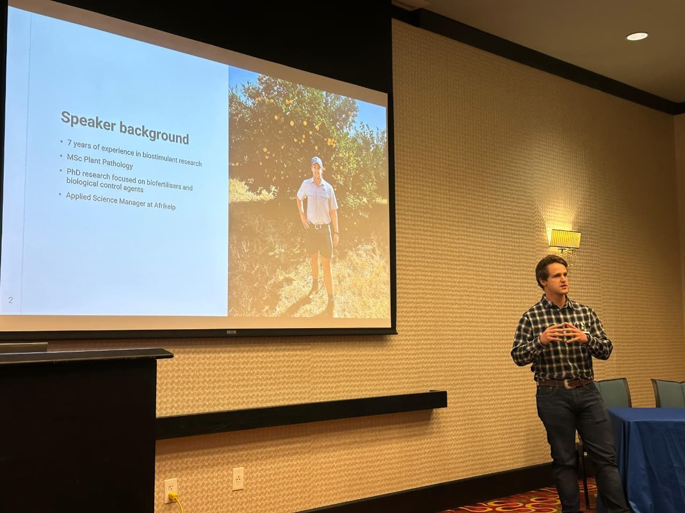
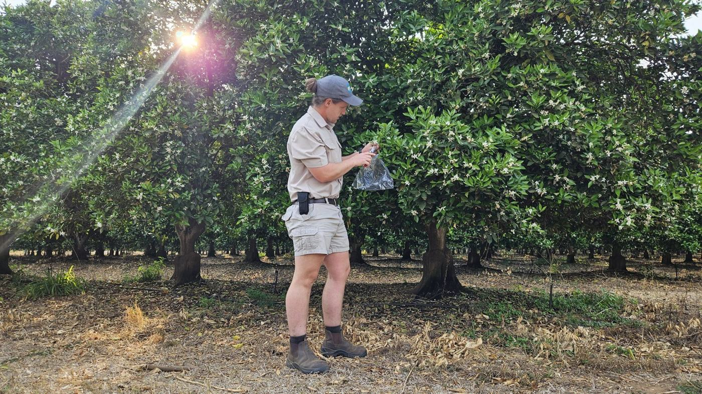
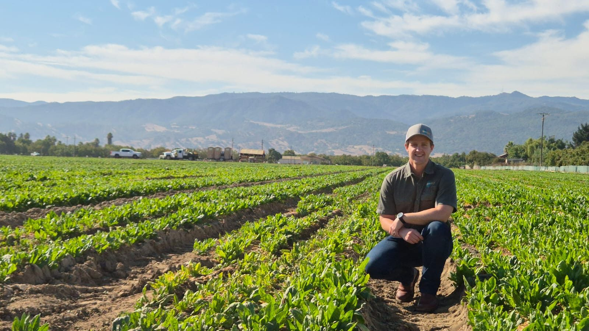
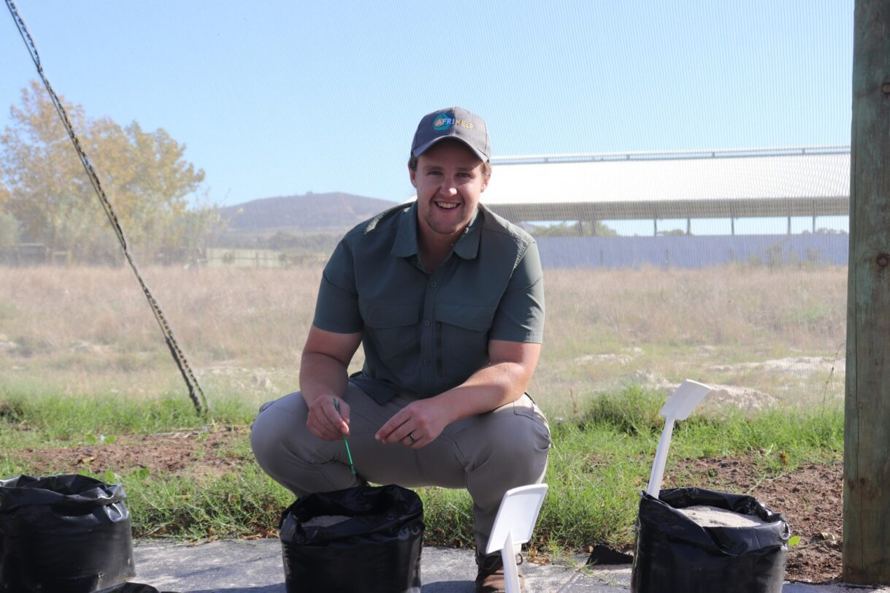
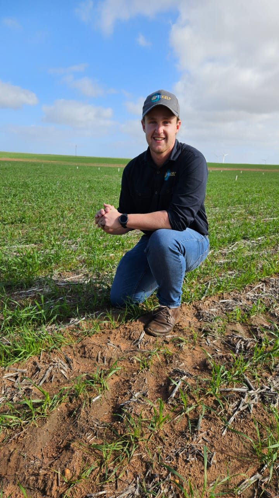
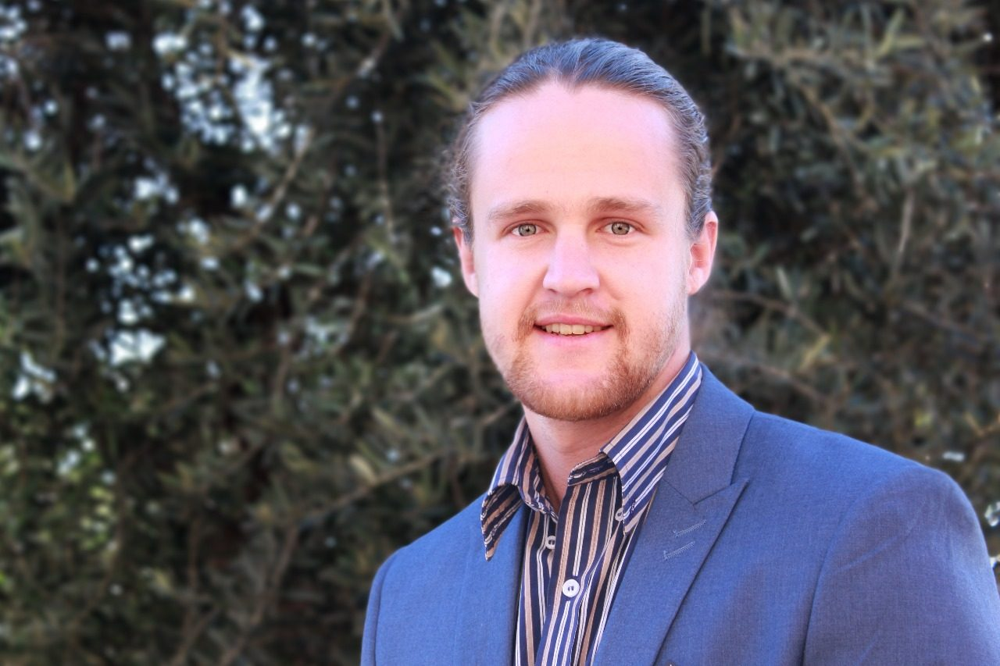
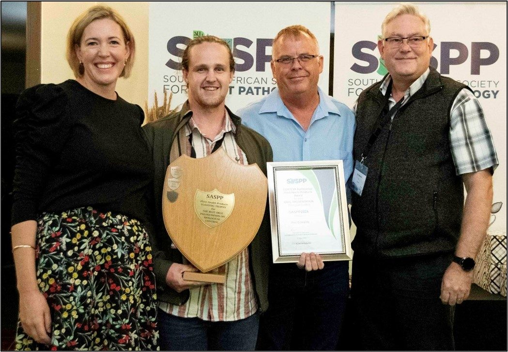

Alec
Edwards
Applied scientist and plant pathologist, Cape Town
I lead replicated field trials on seaweed biostimulants at Afrikelp, across perennial, horticultural and broadacre crops in South Africa, the United States, Latin America, Asia and Australia, and study how Ecklonia maxima extracts act in the plant.





About

I am a plant pathologist by training. Both my MSc and PhD at the University of the Free State dealt with Sclerotinia stem rot in soybean, from salicylic acid and the root microbiome to native microbial consortia tested in the field over two seasons.
At Afrikelp I lead the applied science behind the company's Ecklonia maxima seaweed products. I design and run replicated trials with contract research organisations, universities and partners in seven countries, analyse the data, and work on the modes of action behind crop responses. I also support commercial teams and present the work to growers, advisors and scientific audiences.
Before Afrikelp I worked in environmental science, running microbial bioreactors that treat contaminated mine water in South Africa and Lesotho. Since 2020 I have also developed and taught accredited agricultural courses and trained emerging farmers, including a permaculture programme that helped 40 households in Edenville, Free State, set up their own vegetable gardens. I co-supervised two Honours projects and am a member of the Southern African Society for Plant Pathology.
I grew up partly on the Northern Cape's West Coast, which is where I fell for the natural world. Outside work I spend time in nature, look after my bonsai and grow gourmet mushrooms.
Research
A biostimulant response only matters if it shows up in the field. My work starts with replicated trials and then zooms in, plant to cell to molecule, to understand why a crop responded, or why it didn't.
- FieldYield, quality, return on investment, nutrient and water use efficiencyReplicated RCBD and factorial trials, run in-house and with contract research organisations and universities
- Whole plantCanopy, roots, chlorophyll, NDVI, photosynthesis, stress injuryGreenhouse and growth-room work, including abiotic stress and nutrient limitation
- Tissue and cellPlant hormones, enzymes, pathogen load, root microbiomeHormone analysis, enzyme assays, quantitative PCR and sequencing
- MoleculesMetabolome, proteome and the pathways that link themMetabolomic and proteomic studies with university partners, read against the field results
Crops and depth of work
| Crop | Field trials | Physiology and quality | Plant health and microbes | Omics |
|---|---|---|---|---|
| Fruit, nut and specialty crops | ||||
| Table grapes | ||||
| Almonds | ||||
| Blueberries | ||||
| Strawberries | ||||
| Stone fruit | ||||
| Citrus | ||||
| Hops | ||||
| Pecans | ||||
| Field crops | ||||
| Soybean | ||||
| Wheat | ||||
| Sunflower | ||||
Main focusWorked onNot yet
Where the work has run
- South Africa (home base)
- United States
- Mexico
- Brazil
- Argentina
- Malaysia
- Australia
- Lesotho (mine-water remediation)
Experience
-
Applied Science Manager
Leads Afrikelp's trial programme: protocols for field trials in the United States and greenhouse trials in South Africa, collaboration with contract research organisations, universities and industry partners, and research into how seaweed extracts work. Manages part of the R&D team, analyses trial data for product development and supports commercial teams worldwide.
-
Technical Agronomist
Ran agronomic trials in controlled and field conditions, wrote trial protocols and SOPs, and provided technical support to farmers, distributors and sales agents.
-
Environmental Science Specialist
Designed, operated and optimised semi-active bioreactors that use microbial consortia to treat acid mine drainage from gold and coal mines in South Africa and to denitrify diamond-mine effluent in Lesotho. Contributed to soil and groundwater remediation using phytoremediation, microbial inoculants and biochar.
-
Content Specialist and Affiliate Lecturer
Develops SAQA-aligned modules and assessments, including organic certification, plant propagation, hydroponics, irrigation, integrated pest management and permaculture, and facilitates workshops for emerging farmers, communities and online students.
-
Teaching, research and laboratory roles
Teaching assistant and facilitator on the UFSS1504 first-year module, including success coaching and the move to online learning during COVID-19 (2019 to 2021), and on the EDED3722 employability module (2022). Research assistant at the Centre for Teaching and Learning, reviewing curricula against graduate attributes (2022). Laboratory assistant preparing and facilitating final-year and Honours plant pathology practicals (2016 to 2018), and practical assistant in first-year biology (2015). Co-supervised two BSc Honours projects on beneficial bacteria and biological control (2021 and 2022).
Education
-
PhD, Plant Health Ecology
Thesis: An integrated systems approach for the management of Sclerotinia stem rot using plant health promoting bacteria and salicylic acid. Combined a meta-analysis of plant growth-promoting bacteria with the isolation of native microbial consortia and their validation in field trials over two seasons.
-
MSc, Plant Pathology
Dissertation: The effect of salicylic acid on Sclerotinia stem rot and its effects on the soybean rhizomicrobiome.
-
BSc Honours, Plant Health Ecology, with distinction
Population study of Alternaria alternata associated with pecan orchards, with the South African Pecan Producers Association (SAPPA).
-
BSc, Plant Sciences and Plant Pathology, with distinction
Best Plant Science and Plant Pathology student in second and third year.
-
Short courses
DunhamTrimmer Biologicals Industry Training, all modules: biostimulants, biocontrol and regulatory, 2026.
Agri-Leadership (Industry), Department of Agronomy, Stellenbosch University, 2024.
Success Coaching certificate and Level 2 Academic Advising course.
Publications and talks
Publications
- Edwards, A., Santibanez, N., Orellana, J. and Naicker, D. Influence of Ecklonia maxima seaweed extract on almond yield, quality and fruit retention. Submitted to South African Journal of Plant and Soil.
- Mc Lean, C.C., Du Preez, C.C., Swart, W., Kotze, E., Kotze, J., Edwards, A. and Van Tol, J.J. (2026). Soil microbial community functioning as indicators of alpine soil health in the northern Maloti–Drakensberg, South Africa. Koedoe 68(1): a1870. doi:10.4102/koedoe.v68i1.1870
- Edwards, A. and Rothmann, L.A. (2019). Biological control of Sclerotinia diseases associated with oilseed crops. Oilseeds Focus 5(4): 20–21. Trade article. PDF
Invited and oral presentations
- Plant extracts and non-microbial biostimulants in action: new approaches for better performance. SABO/Fertasa Biostimulant Workshop, CSIR, Pretoria, August 2026.
- Ecklonia maxima enhances photosynthesis, NUE and yield under semi-arid conditions. SATI Table Grape Conference, Franschhoek, 2026.
- Supporting crop resilience: insights from Ecklonia maxima extracts. Regenerative Ag Summit, 2025.
- Towards climate resilient agriculture: insights from Ecklonia maxima in mitigating abiotic stress. US Biostimulant Summit, 2025.
Posters
- One seaweed: four abiotic stresses from proteome to physiology and agronomic outcomes. Biostimulants World Congress, Sacramento, USA, 1–3 December 2026 (accepted).
- Ecklonia maxima improves vine performance, fruit development and postharvest quality in table grapes across commercial production regions. 11th International Table Grape Symposium, Murcia, Spain, September 2026.
- Mode of action in improving nutrient use efficiency and abiotic stress tolerance of an Ecklonia maxima seaweed biostimulant. 7th BioAgTech World Congress, Valencia, Spain, April 2026. Presented on my behalf.
- Seaweed biostimulants for abiotic stress mitigation: understanding modes of action. Biostimulants World Congress, Barcelona, Spain, 2025. Presented on my behalf.
- Evaluating seaweed biostimulants: formulation or function? Biostimulants World Congress, Barcelona, Spain, 2025. Presented on my behalf.
Earlier research presentations
- talk title 53rd SASPP Congress, Clarens, January 2024. Plant Health Products Award for the best oral presentation on biological control.
- Edwards, A., Swart, W.J. and Rothmann, L.A. Characterising plant health promoting microorganisms and potential biological control agents from the soybean microbiome. 52nd SASPP Congress, August 2022; Botany and Plant Biotechnology Symposium, University of Johannesburg, November 2022 (best PhD presentation); SAAWK Student Symposium, November 2022 (second-best PhD presentation).
- Edwards, A., Swart, W.J. and Nyoni, M. Characterising the effect of salicylic acid application on Sclerotinia stem rot in soybean. 52nd SASPP Congress, August 2022; SAAWK Student Symposium, November 2022.
- Three Minute Thesis, University of the Free State, 2022. Best PhD presentation, Faculty of Natural and Agricultural Sciences; third in the institutional final.
- Three Minute Thesis, University of the Free State, 2020. Mighty microbes.
- Edwards, A., Swart, W.J. and Nyoni, M. The effect of salicylic acid on Sclerotinia stem rot and the soybean rhizomicrobiome. Botany and Plant Biotechnology Symposium, University of Johannesburg, 2019 (best MSc presentation).
Co-authored student work
- Moabi, T., Swart, W.J., King, A., Dube, N. and Edwards, A. The biological control agents Carvalhotingis visenda and Hedwigiella jureceki as vectors for the adventive pathogen Cercosporella unguis-cati in South Africa. 5th National Global Change Conference, Bloemfontein, 2023 (best oral presentation; supervised Honours project).
- Hlongwane, N., Swart, W.J. and Edwards, A. Exploring soybean and sunflower microbiomes for beneficial bacterial microorganisms. Poster, 52nd SASPP Congress, 2022 (best poster; supervised Honours project).
- Mc Lean, C.C., Van Tol, J.J., Swart, W.J., Kotze, E., Van Aardt, A.C., Kotze, J.J. and Edwards, A. Quantifying soil degradation through microbial activity of alpine soils in the northern Drakensberg, South Africa. Southern African Mountain Conference, KwaZulu-Natal, 2022.
Writing
Formulation or function? How to read a biostimulant trial
Seven questions that separate a result you can act on from a demonstration plot.
What soil microbes reveal about the health of mountain soils
A plain-language summary of our 2026 Koedoe paper on the Maloti–Drakensberg summit soils.
From the lab bench to the trial plot: lessons from a PhD on Sclerotinia stem rot
What five years of chasing a soybean disease taught me about applied research.
Speaking
I give product-neutral talks of 25 to 30 minutes for technical, grower and research audiences, adapted to the host's crops.
Formulation or function? Reading the evidence on seaweed biostimulants
What kelp-derived compounds are, how to read a biostimulant trial, and a checklist for judging any biostimulant claim. For advisors, agronomists, research and regulatory staff.
Kelp extracts and crop resilience: nutrient use efficiency and abiotic stress
The physiology behind these two common claims, the trial designs that can detect them, and when no effect should be expected. For growers and advisors in irrigated horticulture and broadacre.
From bud to shelf life: seaweed extracts in perennial fruit crops
A season in table grapes, blueberries, almonds and hops, separating replicated evidence from descriptive results. For fruit growers, packhouse and quality staff.
For speaker biographies or bookings, get in touch.

Skills
- Trial design and analysis
- Protocols, RCBD and factorial designs, mixed models and mean separation in R
- Crop trials
- Field, greenhouse and growth-room work, run internally and with contract research organisations
- Biostimulants and biocontrol
- Seaweed extracts, plant growth-promoting bacteria and biological control agents
- Plant pathology and microbiology
- Pathogenicity trials, isolating and screening beneficial microbes, DNA extraction, sequencing and qPCR, soil biological analysis, plant enzyme and photosynthesis measurements
- Bioremediation
- Microbial bioreactors for mine water, phytoremediation and biochar
- Teaching and communication
- Lecturing, digital course content, grower and partner training, presentations
- Languages
- English and Afrikaans
- Awards
- Best oral presentation on biological control (SASPP, 2024), best PhD presentation (UJ, 2022), best PhD Three Minute Thesis in faculty and third overall (UFS, 2022), best MSc presentation (UJ, 2019), best ePortfolio and best presenter (UFS, 2021), best marker (UFS, 2020)